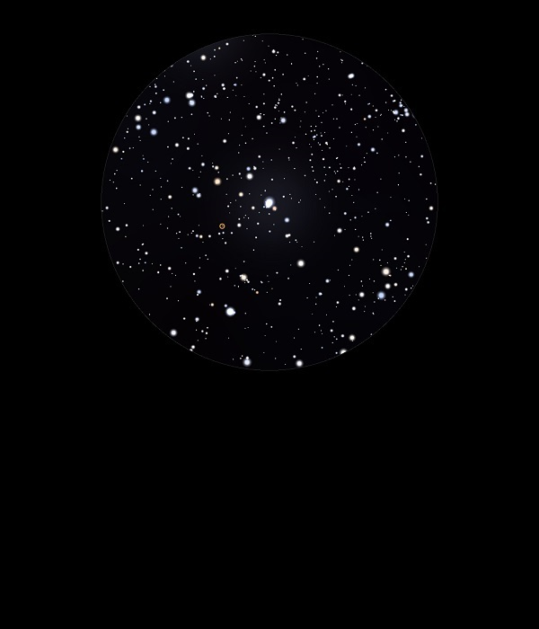

IC 2177

Bright Nebula in Monoceros
Mag ?
The Seagull Nebula
24/01/15
Just a hint of nebulosity in 12mm with UHC filter around vo 569 Mon (HIP 34234A) in a really attractive and intricate star field